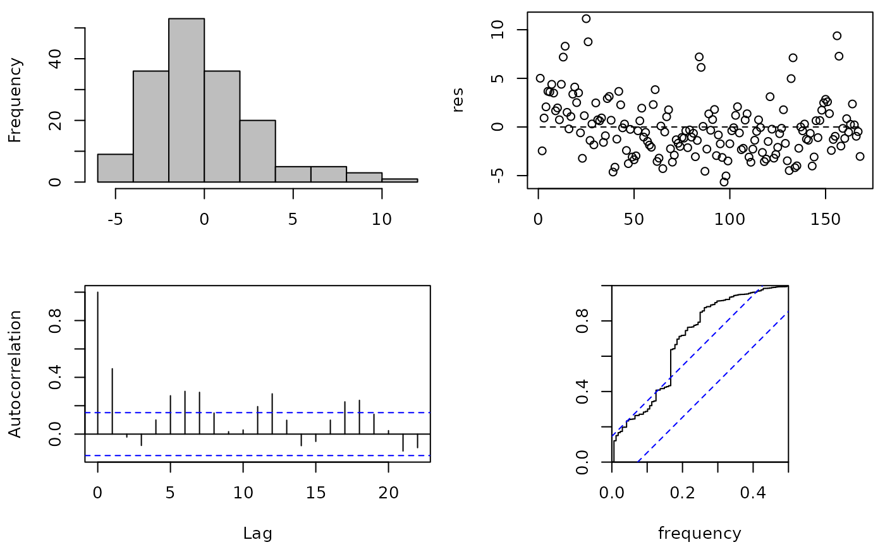
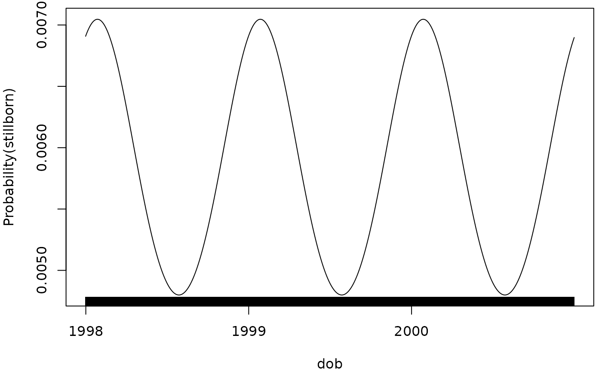

Cosinor Regression Model for Detecting Seasonality in Yearly Data or Circadian Patterns in Hourly Data
Source:R/cosinor.R
cosinor.RdFits a cosinor model as part of a generalized linear model.
Arguments
- formula
regression formula.
- date
a date variable if type="daily", or an integer between 1 and 53 if type="weekly", or an integer between 1 and 12 if type="monthly", or a POSIXct date if type="hourly".
- data
data set as a data frame.
- family
a description of the error distribution and link function to be used in the model. Available link functions:
stats::gaussian()(default),identity(),log(),logit(),cloglog(). Note, it must have the parentheses.- alpha
Significance level. Default is 0.05.
- cycles
number of seasonal cycles per year if type="daily", "weekly" or "monthly"; number of cycles per 24 hours if type="hourly"
- rescheck
plot the residual checks (TRUE/FALSE), see
seasrescheck().- type
"daily" for daily data (default), or "weekly" for weekly data, or "monthly" for monthly data, or "hourly" for hourly data.
- offsetmonth
include an offset to account for the uneven number of days in the month (TRUE/FALSE). Should be used for monthly counts (with
family=poisson()).- offsetpop
include an offset for the population (optional), this should be a variable in the data frame. Do not log-transform the offset as the log-transform is applied by the function. This should be an expression, as given in the example below.
- text
add explanatory text to the returned phase value (TRUE) or return a number (FALSE). Passed to the
invyrfraction()function.
Value
Returns an object of class "Cosinor" with the following parts:
call: the original call to the cosinor function.
glm: an object of class
glm(seeglm()).fitted: fitted values for intercept and cosinor only (ignoring other independent variables).
fitted.plus: standard fitted values, including all other independent variables.
residuals: residuals.
date: name of the date variable (in Date format when type =
daily).
Details
The cosinor model captures a seasonal pattern using a sinusoid. It is
therefore suitable for relatively simple seasonal patterns that are
symmetric and stationary. The default is to fit an annual seasonal pattern
(cycle=1), but other higher frequencies are possible (e.g., twice per
year: cycle=2). The model is fitted using a sine and cosine term that
together describe the sinusoid. These parameters are added to a generalized
linear model, so the model can be fitted to a range of dependent data (e.g.,
Normal, Poisson, Binomial). Unlike the nscosinor() model, the cosinor
model can be applied to unequally spaced data.
References
Barnett, A.G., Dobson, A.J. (2010) Analysing Seasonal Health Data. Springer. doi:10.1007/978-3-642-10748-1
Author
Adrian Barnett a.barnett@qut.edu.au
Examples
## cardiovascular disease data (offset based on number of days in...
## ...the month scaled to an average month length)
res <- cosinor(
cvd ~ 1,
date = 'month',
data = CVD,
type = 'monthly',
family = poisson(),
offsetmonth = TRUE
)
summary(res)
#> Cosinor test:
#> Number of observations = 168
#> Amplitude = 232.34 (absolute scale)
#> Phase: Month = 1.3
#> Low point: Month = 7.3
#> Significant seasonality based on adjusted significance level of 0.025 = TRUE
#>
#> Regression coefficients:
#> Estimate Std..Error z.value Pr...z..
#> (Intercept) 7.21933179 0.002093436 3448.557005 0.000000e+00
#> cosw 0.15552367 0.002955997 52.612939 0.000000e+00
#> sinw 0.02237303 0.002949022 7.586594 3.284251e-14
seasrescheck(res$residuals) # check the residuals

## stillbirth data
res <- cosinor(
stillborn ~ 1,
date = 'dob',
data = stillbirth,
family = binomial(link = 'cloglog')
)
summary(res)
#> Cosinor test:
#> Number of observations = 60110
#> Amplitude = 0 (probability scale)
#> Phase: Month = January , day = 27
#> Low point: Month = July , day = 29
#> Significant seasonality based on adjusted significance level of 0.025 = TRUE
#>
#> Regression coefficients:
#> Estimate Std..Error z.value Pr...z..
#> (Intercept) -5.14427565 0.05368620 -95.821187 0.00000000
#> cosw 0.17266841 0.07618792 2.266349 0.02343003
#> sinw 0.08533429 0.07512806 1.135851 0.25601888
plot(res)
#> Warning: `plot.Cosinor()` was deprecated in season 0.3.17.
#> Use `autoplot()` for a ggplot object you can extend:
#> ℹ autoplot(x) + ggplot2::theme_bw()

## hourly indoor temperature data
res <- cosinor(
bedroom ~ 1,
date = 'datetime',
type = 'hourly',
data = indoor
)
summary(res)
#> Cosinor test:
#> Number of observations = 2021
#> Amplitude = 3.19
#> Phase: Hour = 7.7
#> Low point: Hour = 19.7
#> Significant circadian pattern based on adjusted significance level of 0.025 = TRUE
#>
#> Regression coefficients:
#> Estimate Std..Error t.value Pr...t..
#> (Intercept) 19.880382 0.07194127 276.34183 0.000000e+00
#> cosw -1.345546 0.10179658 -13.21799 2.574413e-38
#> sinw 2.887552 0.10168383 28.39736 1.586551e-149
# to get the p-values for the sine and cosine estimates
summary(res$glm)
#>
#> Call:
#> stats::glm(formula = form, family = family, data = data, offset = offset)
#>
#> Coefficients:
#> Estimate Std. Error t value Pr(>|t|)
#> (Intercept) 19.88038 0.07194 276.34 <2e-16 ***
#> cosw -1.34555 0.10180 -13.22 <2e-16 ***
#> sinw 2.88755 0.10168 28.40 <2e-16 ***
#> ---
#> Signif. codes: 0 ‘***’ 0.001 ‘**’ 0.01 ‘*’ 0.05 ‘.’ 0.1 ‘ ’ 1
#>
#> (Dispersion parameter for gaussian family taken to be 10.45967)
#>
#> Null deviance: 31358 on 2020 degrees of freedom
#> Residual deviance: 21108 on 2018 degrees of freedom
#> AIC: 10485
#>
#> Number of Fisher Scoring iterations: 2
#>